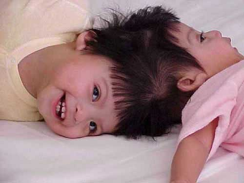
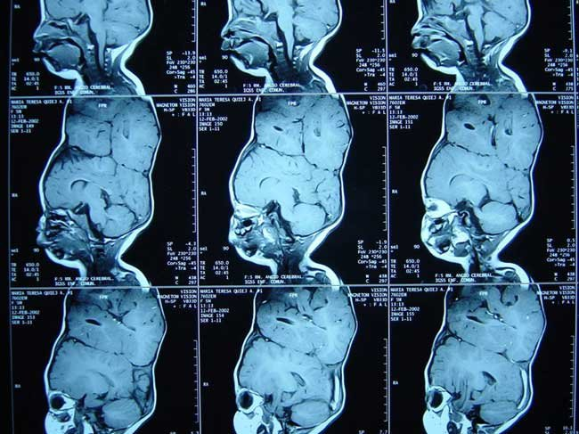
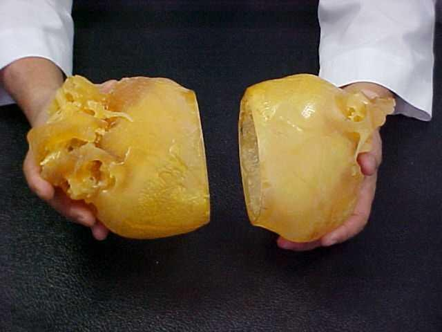
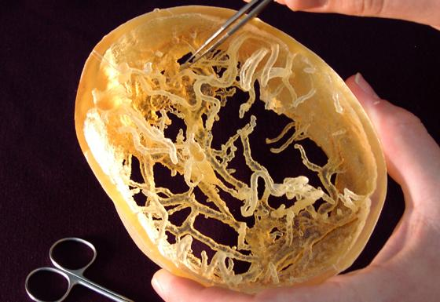
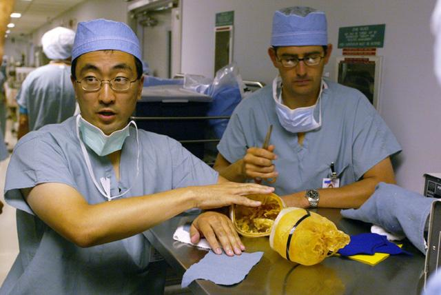
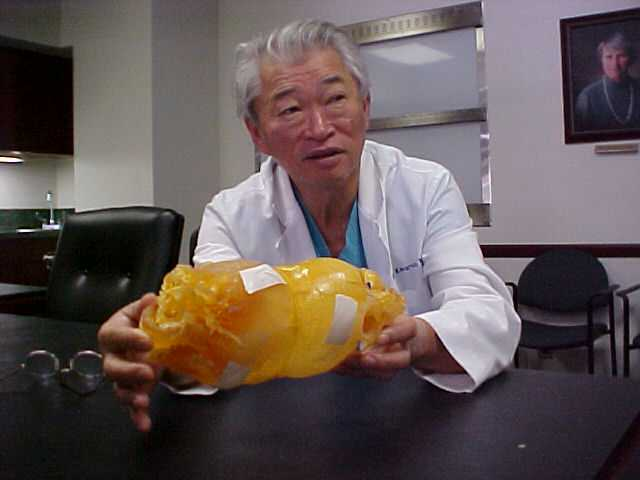

Rapid prototyping helps separate conjoined twins August 15, 2002 -- Maria Teresa and Maria de Jesus Quiej-Alvarez were born on July 24, 2001 in a rural village in Guatemala. Together, they weighed 4.4 pounds at birth and, despite their small size, were healthy in every way -- except for being joined at the head. Over the past year, the girls have remained healthy and happy but they have been severely restricted by their condition. Recently, a nonprofit organization called Healing the Children (www.healingthechildren.org) arranged for the girls to be flown to Los Angeles where a volunteer team of neurosurgeons and plastic surgeons at the University of California Los Angeles (UCLA) Mattel Childrens’ Hospital successfully separated them in a 22-hour-long operation. Today, both girls are doing well, and the prognosis for both is excellent. Without rapid prototyping, say the doctors, the operation would have been much more difficult.  Biomodels -- medical rapid prototypes For some years, rapid prototyping has found limited acceptance in the medical world, but most doctors, skilled at reading x-rays, magnetic imaging data, and computed tomography scans, don’t know about the technology. Those who do often feel that rapid prototyping delivers no more information than other methods. However, a small number of surgeons, particularly those doing complex facial reconstructions, have found that building rapid prototyping models of underlying bones and using them to plan procedures can shave hours off the time required for actual operations. In some cases, use of biomodels can eliminate the need for exploratory operations altogether. Maria y Maria For a physician, separating conjoined twins is one of the most complicated procedures imaginable. Intertwining bones, nerves, blood vessels, and other tissues force doctors planning such operations to abandon everything they know of normal anatomy and chart from scratch the way each of these unique pairs is arranged. In the case of the two Marias, x-rays showed that the girls did, in fact, have separate and complete brains, normal in size and structure and separated by a membrane. This meant that the surgeons would not have to cut through any brain tissue. The arteries that carried oxygenated blood to their brains were also separate, but the veins that drained the blood were interwoven and fed into each other’s circulatory systems. The most complex part of the operation would be to sort out these veins and reroute each girl’s blood supply. And this is where rapid prototyping played an essential role.  The surgical team was headed by Dr. Henry Kawamoto, director of craniofacial surgery at UCLA, and Dr. Jorge Lazareff, director of pediatric neurosurgery at the Mattel Children’s Hospital. A doctor on the team had used rapid prototypes previously and convinced the lead surgeons that such models might be useful in this case, enabling the plastic surgeons to practice how to separate the two girls’ skulls and plan how they might graft skin to cover their brains once separated. For the neurosurgeons, physical models would help sort out the maze of interconnected blood vessels. So the team contacted Biomedical Modeling Inc. (BMI) (www.biomodel.com) in Boston. According to company founder Eitan Priluck, Biomedical Modeling is one of a handful of companies worldwide whose sole business is fabricating rapid prototypes for medical use. When the UCLA medical team first contacted BMI, Priluck says, there was only about a week left before the scheduled surgery. The UCLA physicians supplied BMI with a series of computed tomography (CT) scans of the two girls. Complicating the task was the fact that the two girls, while connected, couldn’t be arranged in the CT system so that a single scan of their heads could be made. Instead, three sets of scan data were collected at different angles and BMI had to register and combine them into a single three-dimensional model. Priluck says his team used Materialise’s MIMICS software to combine the scans and process the data. In most cases, he says, doctors want biomodels built of either bone or soft tissue but not the two combined. With MIMICS, he says it’s relatively simple to set thresholds to capture such distinctions. In this case, however, the surgical team wanted a biomodel of the skull that included the blood vessels, which made the job more challenging. He says it took about three days to process the CT data and create STL files for rapid prototyping. In the past, says Priluck, BMI has used various rapid prototyping technologies, most often stereolithography, because it delivers crisp models with good definition. But this case presented some challenges that made the use of stereolithography problematic if not impossible. With a stereolithography model, the maze of blood vessels would have required support structures that would have been next to impossible to remove. So Priluck decided to see if a new rapid prototyping technology might be more effective. Priluck contacted InterPro (www.interpro-rtc.com), a nearby rapid prototyping service provider in Deep River, Connecticut. InterPro operates stereolithography and selective laser sintering systems as well as a 3D Systems ThermoJet concept modeler. In addition, it recently took delivery of an Objet Tempo rapid prototyping system. The Tempo, made by the Israeli company Objet Geometries Ltd. (www.objet.co.il), builds parts by selectively jetting tiny droplets of acrylate photopolymer and then curing the drops, layer by layer, with light. Unlike stereolithography, which uses the primary building material for supports that must be cut or sanded away, the Tempo employs a second photopolymer for supports that never fully harden. Once a part is complete, this gel-like support material can be wiped off or removed by water jet. InterPro co-owner Kevin Dyer agreed that the task seemed well-suited to the abilities of the Tempo and offered to build three parts, one of each girl’s skull and one of the junction between the two. Dyer says the STL files supplied by BMI were large, about 80 megabytes each, but contained no flaws. He says his team verified the data, determined the optimum orientation of each part in the Tempo’s build chamber, and started building. He says it took about 24 hours to build each of the three parts.  Once they were built, Dyer says removing the Objet support material proved a bit more challenging than he had anticipated. Because the blood vessels were so delicate, it was impossible to blast away the support gel with a water jet without also damaging the fragile structure. So Dyer says his team had to spoon out and clean off the support material by hand, at times heating the parts with warm water to further soften the material. He says his technicians had to check the data constantly to make sure they didn’t remove critical parts of the models. In all, he says, it took about eight hours to clean the parts.  Priluck says he shipped the parts to UCLA as soon as he received them from InterPro, and the doctors were delighted with them. Kawamoto’s plastic-surgery team used strips of felt representing the girls’ skin to plan how they would cover the skulls once the twins were separated. And Lazareff’s group used the model of the intersection of the two skulls to help plan how it would reroute the necessary blood vessels. The operation took about 22 hours to complete. Similar procedures in the past, says Priluck, have taken as long as 97 hours. Part of this time savings almost certainly was attributable to the rapid prototyping models. Says Kawamoto, "No matter how good our 3D graphics are, there is nothing like holding a model in your hands." Contact: Biomedical Modeling, Inc., 1085 Commonwealth Avenue, P.O. Box 312, Boston, Massachusetts 02215 Telephone: 1 (617) 738-8168 or InterPro, 630 Industrial Park Road, Deep River, Connecticut 06417 Telephone: 1 (860) 526-5869.  
For more information:
|